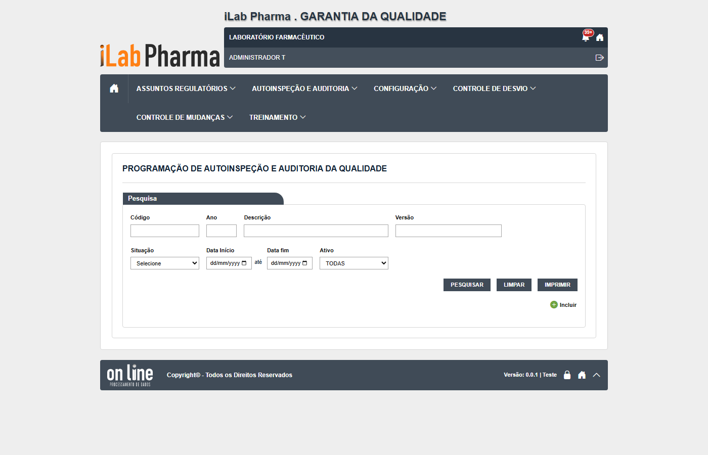
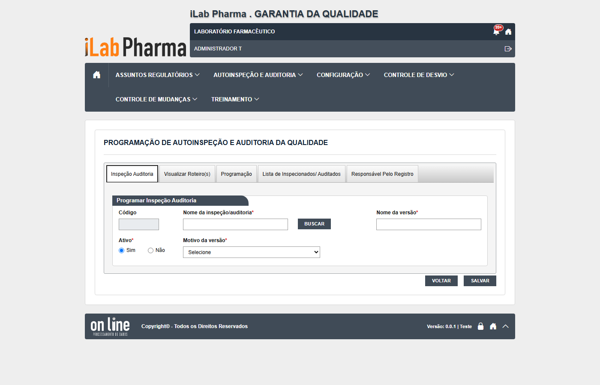
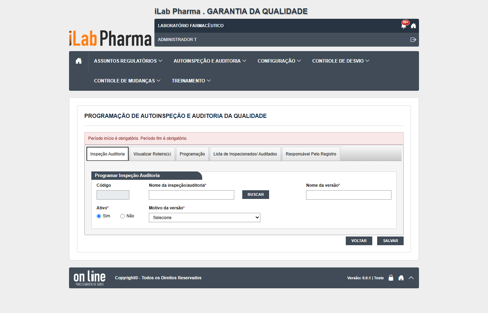
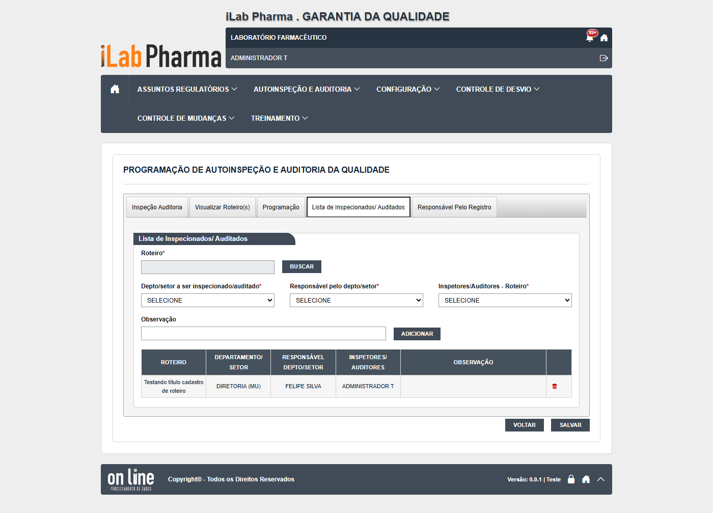
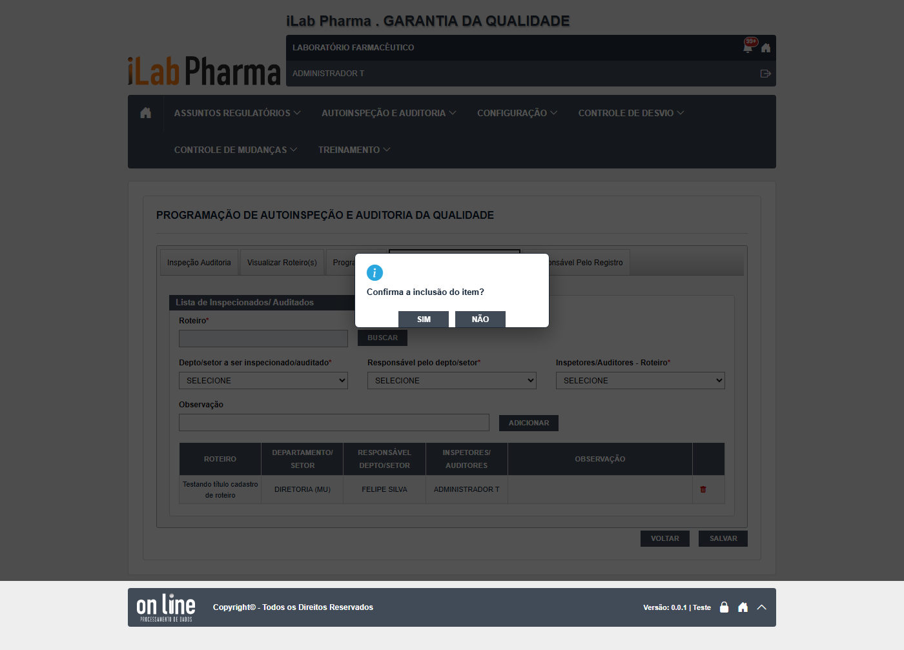
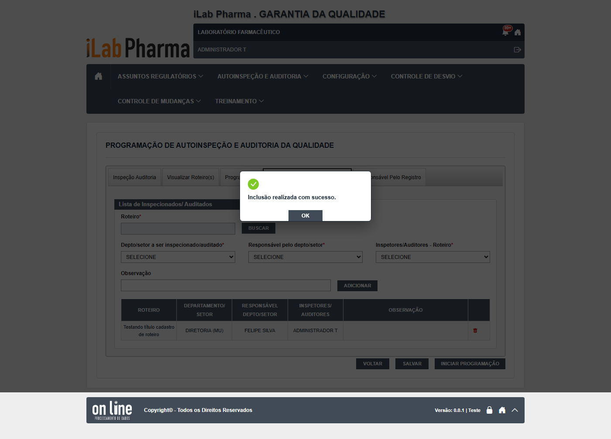
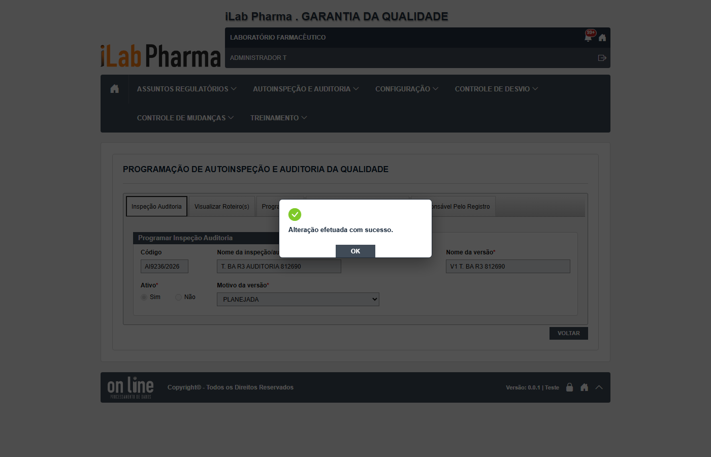
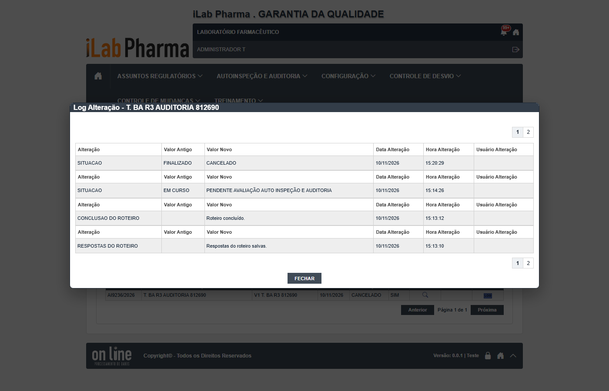

Menu: Autoinspeção e Auditoria (o título da tela é "Programação de Autoinspeção e Auditoria da Qualidade") · Situação do manual: Em ajuste · Fonte dos prints: versão nova.
Para que serve
Programa uma autoinspeção ou auditoria: escolhe o cadastro, dá um nome de versão e o motivo, define o período, os inspetores e, na Lista de Inspecionados/Auditados, o roteiro, a área, o responsável da área e o inspetor de cada linha. Depois inicia a programação (que passa a aparecer no Registro) ou a cancela. Também imprime a lista de programações.
Antes de começar (o que precisa existir)
| O que precisa existir | Para quê | Onde se cadastra |
|---|---|---|
| Cadastro de autoinspeção ativo com roteiro ligado | Escolhido na primeira aba | Autoinspeção e Auditoria > Cadastro Autoinspeção e Auditoria e Cadastro de Roteiro |
| Inspetores (usuários do sistema) | Aba Programação e campo "Inspetores/Auditores - Roteiro" | Módulo Principal |
| Áreas e responsável de cada área | Campos "Depto/setor" e "Responsável pelo depto/setor" | Módulo Principal |
| Função da tela no perfil | Sem ela, os botões ficam desabilitados e a chamada de apoio recebe 403 | Administração > Perfil |
Passo a passo
- Abrir a tela. No menu Autoinspeção e Auditoria, clique em Programação Autoinspeção e Auditoria. Filtro: Código, Ano, Descrição, Versão, Situação, Data Início e Data fim, Ativo (TODAS). Botões PESQUISAR, LIMPAR, IMPRIMIR e Incluir.

A imagem mostra o filtro e os quatro botões, sem grade.
- Pesquisar. A grade mostra CÓDIGO, DESCRIÇÃO, VERSÃO, DATA, SITUAÇÃO, ATIVO e os ícones.

A imagem mostra uma programação "AI9236/2026", situação FINALIZADO, com lupa (Visualizar), lixeira (Cancelar) e Log. Ou seja, a programação finalizada ainda oferece Cancelar (DV-GQ-N-017).
- Incluir. Clique em Incluir. A tela tem cinco abas: Inspeção Auditoria, Visualizar Roteiro(s), Programação, Lista de Inspecionados/ Auditados e Responsável Pelo Registro. Na primeira: Código (bloqueado), Nome da inspeção/auditoria* (com BUSCAR), Nome da versão*, Ativo* e Motivo da versão*.

A imagem mostra a aba Inspeção Auditoria vazia, com VOLTAR e SALVAR.
- Salvar vazio (para conhecer a mensagem). Clique em SALVAR.

A imagem mostra a faixa "Período início é obrigatório. Período fim é obrigatório." e nada sobre o cadastro escolhido, a versão, o motivo, o inspetor ou a lista (o caso foi visto em 20/10/2026, ver DV-GQ-N-024 para a ordem das validações).
-
Escolher o cadastro e a versão. Clique em BUSCAR, escolha o cadastro, preencha Nome da versão e Motivo da versão (a imagem de finalizada mostra PLANEJADA).
-
Aba Programação. Defina o período (início e fim), turnos e horários e adicione os inspetores (um deles pode ser coordenador). Esta aba não tem imagem entre as capturas (ver "Prints que faltam"). A regra de independência (o responsável da área não audita a própria área) só vale quando ele é o primeiro ou único auditor: veja DV-GQ-N-043.
-
Aba Lista de Inspecionados/ Auditados. Escolha o Roteiro (BUSCAR), o Depto/setor a ser inspecionado/auditado, o Responsável pelo depto/setor e os Inspetores/Auditores - Roteiro, escreva a Observação se quiser e clique em ADICIONAR.

A imagem mostra a grade com uma linha: roteiro "Testando título cadastro de roteiro", departamento DIRETORIA (MU), responsável (profissional do ambiente), inspetor ADMINISTRADOR T, e a lixeira para remover. Se o inspetor do roteiro for o responsável da área, a tela avisa "Um Responsável não pode ser auditado por ele mesmo." e a linha não entra. Sem nenhum inspecionado, a tela recusa com "E obrigatorio adicionar um inspecionado/auditado." (sem acentos).
- Salvar. Clique em SALVAR. A tela pergunta "Confirma a inclusão do item?".

A imagem mostra a pergunta com SIM e NÃO sobre a lista de inspecionados preenchida. Com SIM:

A imagem mostra "Inclusão realizada com sucesso." e, atrás, os botões VOLTAR, SALVAR e INICIAR PROGRAMAÇÃO. A programação nasce "Programada". As datas de início e fim não podem ser anteriores a hoje ("O período não pode ser menor que a data atual.", mostrada só depois das duas confirmações) nem o início depois do fim ("O período de início não pode ser maior que o período de fim.").
- Iniciar. Clique em INICIAR PROGRAMAÇÃO. A tela pergunta "Confirma o início desta programação?" e, com SIM, a programação passa a EM CURSO.

A imagem mostra "Alteração efetuada com sucesso." com o formulário travado e só o botão VOLTAR. O botão continua habilitado mesmo se o roteiro foi excluído (DV-GQ-N-048):

A imagem mostra o mesmo aviso de sucesso para a programação AI9237/2026, cujo roteiro tinha sido excluído.
-
Alterar. Na linha "Programada" abra o lápis, mude (por exemplo, o fim do período), salve; a tela pede confirmação e justificativa (janela com CONFIRMAR).
-
Cancelar. Clique na lixeira. Abre a tela travada com o botão CANCELAR PROGRAMAÇÃO; ao clicar, uma janela pede só a Justificativa.

Justificativa do cancelamento · clique para ampliar A imagem mostra a janela "Justificativa" (campo obrigatório) com VOLTAR e CONFIRMAR, sobre a programação AI9236/2026, que já estava finalizada.

Cancelamento aceito · clique para ampliar A imagem mostra "Cancelamento efetuado com sucesso." para essa programação finalizada. A situação passa de FINALIZADO para CANCELADO (DV-GQ-N-017, Alta). Em programação "Programada" o cancelamento também é aceito, mas a linha continua com Editar e Cancelar.
-
Ver o histórico. Clique em Log.

Histórico depois do cancelamento · clique para ampliar A imagem mostra o Log com a primeira linha "SITUACAO: FINALIZADO para CANCELADO" e a coluna "Usuário Alteração" em branco (DV-GQ-N-019); as demais linhas (EM CURSO para PENDENTE AVALIAÇÃO, CONCLUSAO DO ROTEIRO, RESPOSTAS DO ROTEIRO) também vêm sem usuário. Não há coluna de justificativa.
-
Imprimir. IMPRIMIR gera o PDF "LISTAGEM DE PROGRAMAÇÃO AUTO INSPEÇÃO E AUDITORIA DE QUALIDADE", com filtro, datas e situação. Não há print do PDF.
Ícones e botões da lista
| Ícone ou botão | O que faz | Quando aparece |
|---|---|---|
| PESQUISAR / LIMPAR / IMPRIMIR | Filtra / esvazia / PDF da lista | Sempre |
| Incluir (+ verde) | Abre a tela de programação | Para quem pode incluir |
| Lápis | Edita | Programação Programada |
| Lupa | Só leitura | Demais situações |
| Lixeira | Cancela | Visto também em FINALIZADO (imagem do passo 2) |
| Log | Histórico | Em cada linha |
Botões e ações
| Botão | O que faz | Observação |
|---|---|---|
| BUSCAR | Escolhe o cadastro ou o roteiro | |
| ADICIONAR | Põe o inspecionado na grade | Não grava até SALVAR |
| SALVAR | Pergunta "Confirma a inclusão do item?" e grava | Alteração pede justificativa |
| INICIAR PROGRAMAÇÃO | Pergunta e leva a EM CURSO | Só depois de salvar |
| CANCELAR PROGRAMAÇÃO | Abre a justificativa e cancela | Vale para finalizada |
| VOLTAR | Volta à lista |
Mensagens do sistema
| Mensagem | Quando aparece |
|---|---|
| Confirma a inclusão do item? / Inclusão realizada com sucesso. | Salvar uma programação nova |
| Confirma o início desta programação? / Alteração efetuada com sucesso. | Iniciar |
| Cancelamento efetuado com sucesso. | Cancelar (a rodada de 20/10/2026 anotou "realizado"; a imagem de 10/11/2026 mostra "efetuado") |
| Demais | Ver "O que o sistema recusa" |